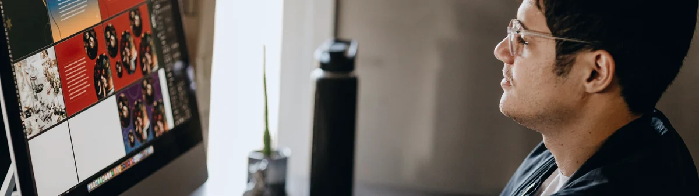
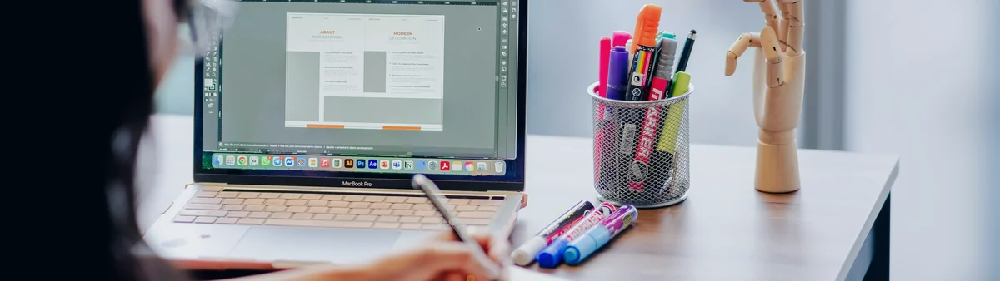

Studio notes
Notes behind the work
Short entries on design, workflows, and digital tools.
Grinding Daily: What Happens Behind the Work
A note on daily output, shifting priorities, current projects, and the invisible work behind building DesignLab.

Building an Internal Creative Request System
Connecting a request form, tracker, dashboard, and status workflow.

Turning My Task Tracker into a Digital Product
How a personal planning tool became a working digital product.
Lessons from 60 Days of Design Content
What changed after building and maintaining a daily content system.